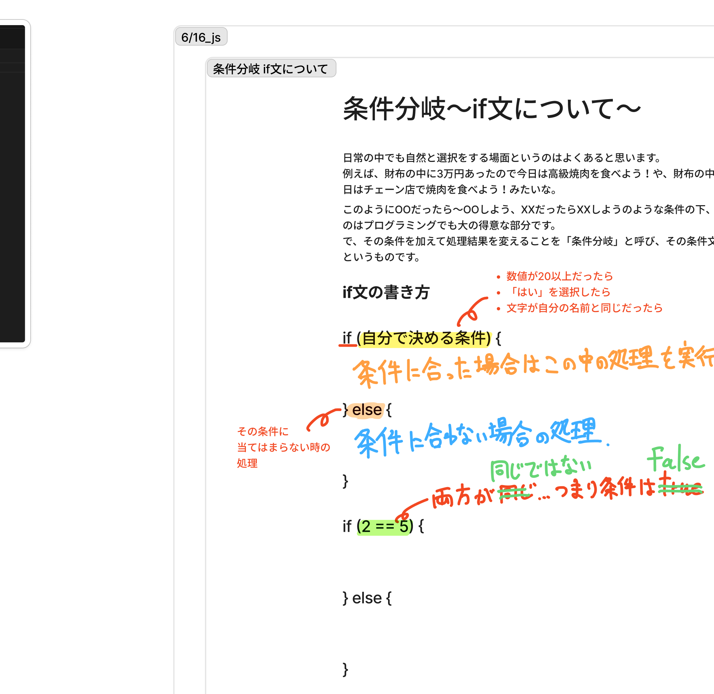
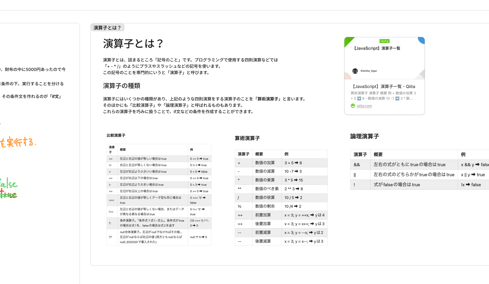
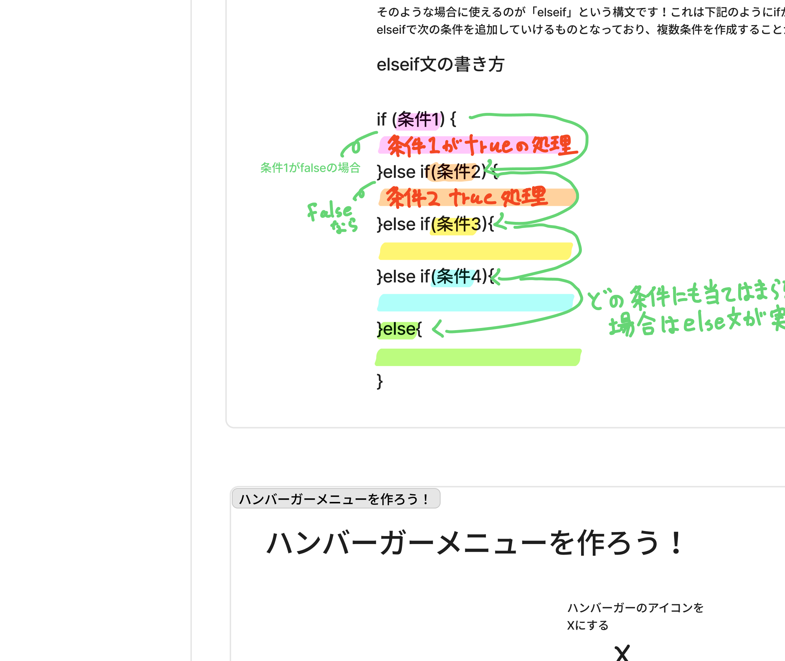
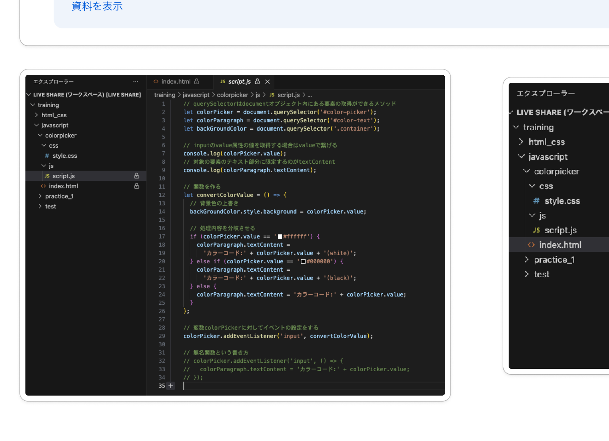
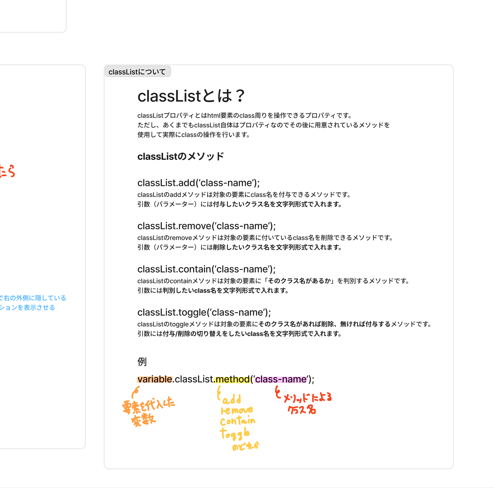
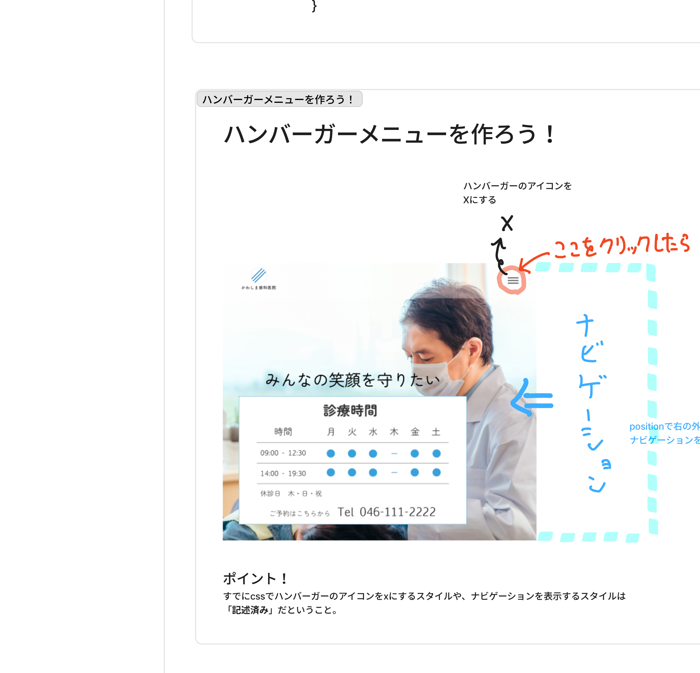

訓練校｜全5時間の集中授業
+連結の進化形）と、本日の主役 条件分岐（if文・else if文）。
カラーピッカーで「白だったら(white)、黒だったら(black)、それ以外はカラーコード」と表示を切り替える動きを実装。演算子（算術・比較・論理）も整理した。
授業の最後に 次回予告：classList で「クラス名の付け外し」を学んで、ハンバーガーメニューの開閉を実装する と A先生から告知。
区切りベース（タイムスタンプなしの文字起こしのため）。★★★＝特に重要。
| 区切り | 内容 | 重要度 |
|---|---|---|
| 1時間目 序盤 | 前回演習1の解説（入力名前→ボタンで「○○さん」表示） | ★★ |
| 1時間目 | いきなりコードでなく「やることを書き出す」 | ★★★ |
| 1時間目 | querySelector → .value で値を取得 | ★★★ |
| 1時間目 | addEventListener('click', 関数) で「ボタンクリック→実行」 | ★★★ |
| 1時間目 | パラメーターは日本語で「引数」と呼ぶ | ★★ |
| 1時間目 | ★テンプレートリテラル（バッククォート＋ ${変数} ）の紹介 | ★★★ |
| 1時間目 末 | 休憩・自由実装時間 | — |
| 2時間目 開始 | カラーピッカーに条件分岐を導入 | ★★ |
| 2時間目 | ★条件分岐とは（焼肉の例）・if文の書き方 | ★★★ |
| 2時間目 | 演算子＝記号のこと（算術・比較・論理） | ★★★ |
| 2時間目 | ==（同じ）の動き：true/false を返す | ★★★ |
| 2時間目 | 受講者Bさんの質問：条件には変数も入る（実用例） | ★★ |
| 2時間目 | if文は「関数の中」に書く（カラーピッカーの場合） | ★★★ |
| 2時間目 | 白だったら「(white)」表示・条件の上に背景色変更 | ★★ |
| 3時間目 開始 | ★else if 文（白/黒/その他の3分岐） | ★★★ |
| 3時間目 | else if は何個でも増やせる（PHP・WordPressで活躍） | ★★ |
| 3時間目 | カラーピッカー完成・ノートまとめタイム | ★★ |
| 3時間目 終盤 | 🔮 次回予告：classList（クラス名の付け外し）でハンバーガーメニューの開閉を作る | ★★ |
いきなりVS Codeを開かない。紙か.txtに「やること」をリストアップしてから手を動かす。
JSでは 「ひきすう」 と呼ぶ方が一般的。第1引数・第2引数。
`カラーコード(${変数})` でもOK。+が多すぎると計算式と混同するのでこちらが現代的。
「AならXする、BならYする」を書ける機能。プログラミングの大の得意分野。
if (条件) { 処理 } else { 別の処理 }。条件は自分で決める。
3種類：算術（+−×÷）／比較（==, >=, <=）／論理（&&, ||）。
5 == 5→true、2 == 5→false。trueなら ifブロックが実行される。
カラーピッカー実装では 関数の中 に書く。実行されるのが関数だから。
3つ以上の分岐は else if を増やす。何個でも追加できる。
if文でエラーが出ると以降が実行されない。必ず実行したい処理は if の上に書く。
前回の演習：入力欄に名前を入れて「表示する」ボタンを押すと、P要素に「○○さん」と表示される。半分くらいできた人がいた。
document.querySelector('#id') でconst userInput = ... のようにaddEventListener('click', 関数名)resultText.textContent = ... で書き換え// 完成例（+連結バージョン） const userInput = document.querySelector('#userInput'); const displayBtn = document.querySelector('#displayBtn'); const resultText = document.querySelector('#resultText'); const displayText = () => { resultText.textContent = userInput.value + 'さん'; }; displayBtn.addEventListener('click', displayText);
#userInput（キャメル）にしているが、現場では #user-input（ケバブケース）が多い。会社によってルールはバラつくが、HTMLのIDはハイフン区切りが定番。
querySelector('#xxx') のクォートは文字列として書いている。それを JS が要素に変換してくれる、というイメージ。だから必ずクォートで囲う。
初心者はいきなり VS Code を開くと迷子になる。先生のおすすめ：
これまで「パラメーター」と呼んでいたものは、日本語では 「引数（ひきすう）」 と呼ぶ方が一般的。意味は同じ。
「ひきすう」と呼ぶ方が現場感がある、と先生。
文字列と変数をつなぐとき、これまでは + を使っていた。新しい書き方が テンプレートリテラル。
'カラーコード(' + color + ')'
`カラーコード(${color})`
` で囲む（シングル/ダブルではない）${変数名} と書くどちらでもOKだが、世の中的にはテンプレートリテラル推奨。理由：+が多いと計算式と勘違いされやすい。

{}、false なら else の中が実行される
if (自分で決める条件) { // 条件に合った場合の処理 } else { // 条件に合わない場合の処理 }
選んだ色が真っ白なら (white)、それ以外ならカラーコード、という分岐を作る。
const changeColor = () => { // ① 背景色を変更（if より前に！） backgroundColor.style.background = colorPicker.value; // ② 表示テキストを条件分岐 if (colorPicker.value == '#ffffff') { colorParagraph.textContent = `カラーコード(${colorPicker.value}) (white)`; } else { colorParagraph.textContent = `カラーコード(${colorPicker.value})`; } };

+-*/などはすべて「演算子」と呼ぶ。| 種類 | 使うシーン | 例 |
|---|---|---|
| 算術演算子 | 計算 | + - * / %（余り） |
| 比較演算子 | 条件を作る（if文で使う） | ==（同じ）!=（違う）> < >= <= |
| 論理演算子 | 条件を組み合わせる | &&（かつ）||（または）!（〜ではない） |
5 == 5 → true（両辺が同じ）2 == 5 → false（同じではない）「if (2 == 5)」のような固定値だけでなく、実際は変数で条件を作る。例えば：
// 入力された数値が20以上だったら（年齢確認の例） if (ageInput.value >= 20) { // ページを表示 } else { // 別のページに飛ばす }
条件の設計はアイデア勝負。優秀なプログラマーは経験則でうまく組み立てる。

else if 文。条件は何個でも追加できる
if (colorPicker.value == '#ffffff') { colorParagraph.textContent = `カラーコード(${colorPicker.value}) (white)`; } else if (colorPicker.value == '#000000') { colorParagraph.textContent = `カラーコード(${colorPicker.value}) (black)`; } else { colorParagraph.textContent = `カラーコード(${colorPicker.value})`; }
注意：書き方の細かいルール }else if(...) ではなく } else if (...) と半角スペースを入れる。詰めるとエラーになる。
2日かけて作ったカラーピッカーの最終形。先生のVS Code画面。

`${変数}` で文字列組み立て授業の最後（残り40秒）に A先生から告知。明日は「クラス名の管理」を JavaScript で行い、それを使ってハンバーガーメニューの開閉（表示／非表示）を実装する。いろんなWebサイトで見るあの動きを、自分で書けるようになる。

classList の4メソッド（add / remove / contains / toggle）と書式 variable.classList.method('class-name')
| メソッド | 役割 |
|---|---|
classList.add('name') | 対象の要素に class名を付与する |
classList.remove('name') | 対象の要素から class名を削除する |
classList.contains('name') | 対象の要素に そのクラス名があるかを判別する（true/false を返す） |
classList.toggle('name') | あれば削除・無ければ付与の 切り替え。ハンバーガーメニューでめちゃくちゃ便利 |
変数.classList.メソッド('class名')。変数 ＝ document.querySelector で取った要素。

.is-active クラスを付与／削除する」という発想。CSS は .is-active がついた時のスタイルを最初から書いておく＝JS は classList.toggle('is-active') 1行でいい。
// アイコン要素を取得 const hamburger = document.querySelector('#hamburger'); // クリックしたらクラスを付け外し hamburger.addEventListener('click', () => { hamburger.classList.toggle('is-active'); });
| 用語 | 意味 |
|---|---|
| 引数（ひきすう） | パラメーターの日本語呼び。第1引数・第2引数のように番号で呼ぶ |
| テンプレートリテラル | `文字列${変数}文字列` の新しい書き方。+ 連結より読みやすい |
| バッククォート | ` の記号。日本語配列は Shift+@ |
| 条件分岐 | 「○○ならXする、××ならYする」と処理を分けること |
| if文 | 条件分岐の構文。if (条件) {...} else {...} |
| else if文 | 3つ以上の条件分岐に使う。何個でも追加可 |
| 演算子 | 記号のこと。算術／比較／論理の3種類 |
| 算術演算子 | + - * / %（計算用） |
| 比較演算子 | == != > < >= <=（条件用） |
| 論理演算子 | &&（かつ）||（または）!（否定） |
| true / false | 真／偽。ifは true なら実行、false なら else へ |
| classList [次回] | HTML要素のclass周りを操作するプロパティ。続けてメソッドを呼ぶ |
| classList.add / remove [次回] | クラス名を付与 / 削除する |
| classList.toggle [次回] | あれば削除・なければ付与の切り替え。ハンバーガーで大活躍 |
| classList.contains [次回] | そのクラス名があるか判別。true/false を返す |
`${変数}` に書き換えてみる初めてそういうことをやる人は、もうシンプルに紙とペンとかでもいいので、何をするのかをリストにした方がいいと思います。── 実装前の準備
条件に分けて結果を変えることをプログラミングでは「条件分岐」と呼びます。プログラミングの大の得意な部分です。── 条件分岐の本質
条件の作り方とかのアイデア出しは、経験則からいろいろ作れるようになるんですけど、最初は多分その辺がちょっと難しいんじゃないかなと思います。── 慣れるまでの覚悟
年に1人くらい、プログラミング面白いって言って趣味でゲーム作っちゃいましたみたいな人がいますね。時間と余裕のある方はぜひチャレンジしてみるのがいいんじゃないかなと思います。── インベーダーゲームも作れる
JavaScriptって何度も言うように初めてやるのは難しいので、なかなかどこをポイントに重きにしてみるか見つけづらいとは思うんですけれども、慣れるまで辛抱というところですかね。── 演習1の出来具合（半々）を踏まえて
いろんなWebサイトを見たときに、こんなような実装をやってるんだなっていうのが想像つくと思います。── ハンバーガーメニューを習う意義
では残り40秒弱、皆さんも実装して動かしてみてください。では頑張っていきましょ。── この日の締めくくり